<div class="sidebar-btn-open" (click)="show = true" *ngIf="!show"> <svg>
  <image xlink:href="../../../assets/icons/svg/addition.svg" src="../../../assets/icons/addition.png" width="100%" height="100%"/>
</svg>
</div>
<nav class="sidebar" *ngIf="show == true">
  <div (click)="show = false" class="sidebar__close-btn">
    <span>X</span>
  </div>
  <button routerLink="/chord-finder" class=""> 
    <svg>
      <image xlink:href="../../../assets/icons/svg/chord.svg" src="../../../assets/icons/chord.png" width="100%" height="100%"/>
    </svg>
    <span>Chord finder</span>
  </button>
  <!-- <button routerLink="/analyzer" class="disabled">
    
    <span>Analyzer</span>
  </button> -->
  <button routerLink="/kalimba" class=""> <svg>
    <image xlink:href="../../../assets/icons/svg/kalimba.svg" src="../../assets/icons/kalimba.png" width="100%" height="100%"/>
  </svg>
    <span>Kalimba</span>
  </button>
  <!-- <button routerLink="/accordion" class="disabled">
    
    <span>Accodrion</span>
  </button> -->
</nav>